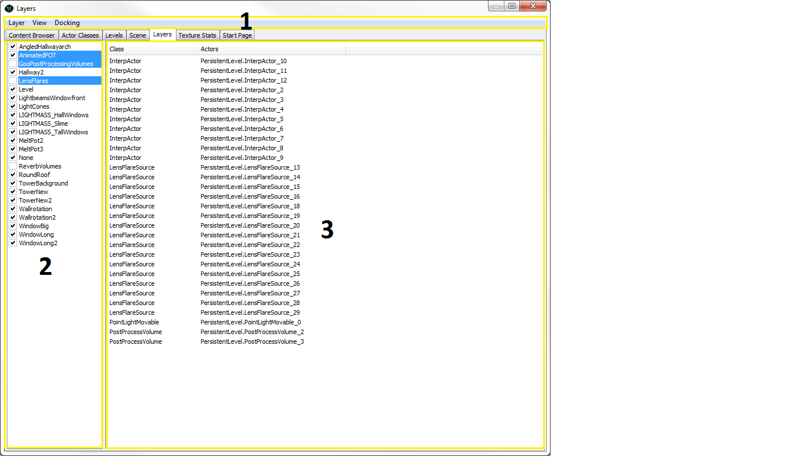
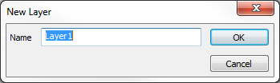

UDN
Search public documentation:
LayersBrowserReferenceCH
English Translation
日本語訳
한국어
Interested in the Unreal Engine?
Visit the Unreal Technology site.
Looking for jobs and company info?
Check out the Epic games site.
Questions about support via UDN?
Contact the UDN Staff
日本語訳
한국어
Interested in the Unreal Engine?
Visit the Unreal Technology site.
Looking for jobs and company info?
Check out the Epic games site.
Questions about support via UDN?
Contact the UDN Staff
图层浏览器指南
概述
打开图层浏览器
图层浏览器界面
图层浏览器由三个主要部分组成：
菜单条
图层
- New（新建）... - 创建一个新图层。
- Rename（重命名）... - 重命名当前选中的图层。
- Delete（删除）... -从图层列表中删除当前选中的图层。
- Add Selected Actors to Layer（将选中的 Actor 添加到图层中） - 将选中的 Actor 添加到当前选中的图层中。
- Delete Selected Actors from Layer（从图层中删除选中的 Actor） - 从当前选中的图层中删除选中的 Actor。
- Select Actors（选择 Actor） - 在当前图层中选择 Actor。
- Deselect Actors（取消选择 Actor） - 取消当前图层中选中的 Actor。
- Make All Layers Visible（使所有图层可见） - 使所有的图层可见。
视图
- Refresh（刷新） 刷新图层列表
Docking（停靠状态）
- Docked（停靠） - 这个选项将会把当前浮动的浏览器停靠到主浏览器窗口中。在当前的浏览器处于停靠状态时，这个选项将处于选种状态。
- Floating(浮动) - 这个选项将会取消停靠浏览器到主要浏览器窗口的停靠状态，使它在自己的窗口中变为浮动的浏览器。在当前的浏览器处于浮动状态时，这个选项处于选中状态。
- Clone Browser(克隆浏览器) - 这个选项将会创建一个当前浏览器的副本。
- Floating Browser（浮动浏览器） - 这个选项将会移除或删除当前的浏览器。这个选项进行在有克隆的浏览器窗口存在时才启用。
图层列表
最初，您所添加到关卡中的任何内容都会被放置到默认的 None 图层中。您添加越多的 Actor 便会创建更多的图层，它们将出现在列表中。 在每个图层旁边的复选框。如果选中，则在这个图层中的 Actor 将会处于可见状态；否则会它们将不能被看到。 通过按住 Ctrl 并点击图层或按住 SHIFT 并点击图层可以选择多个图层。需要注意的是当您复制一个 Actor 时，这个新的 Actor 将仍然在它父项所在的图层中。因为只要您创建了新的 Actor 后就将它们放置到图层中是有好处的，这样使得设立的图层管理器更加容易管理。Actor 列表
Actor 列表会显示包含在图层列表中选中的任何全部图层内包含的所有 actor。任何时候在图层列表中选择一个新的图层，Actor 列表将会填充在这些图层中包含的所有 actor。这个列表可以通过 actor 的类或 actor 名称进行分类。在列表中双击任何 actor 将会在视窗中选择它，所以可以对它进行修改。创建新图层

这样将会弹出一个窗口，您可以命名您的图层。那么在这个图层中的 Actor 现在属于两个图层，一个是您刚刚新建的图层，一个是默认的图层 None 。